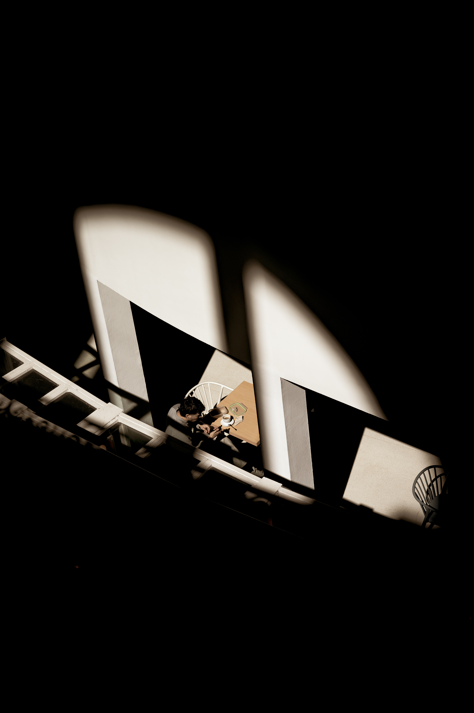
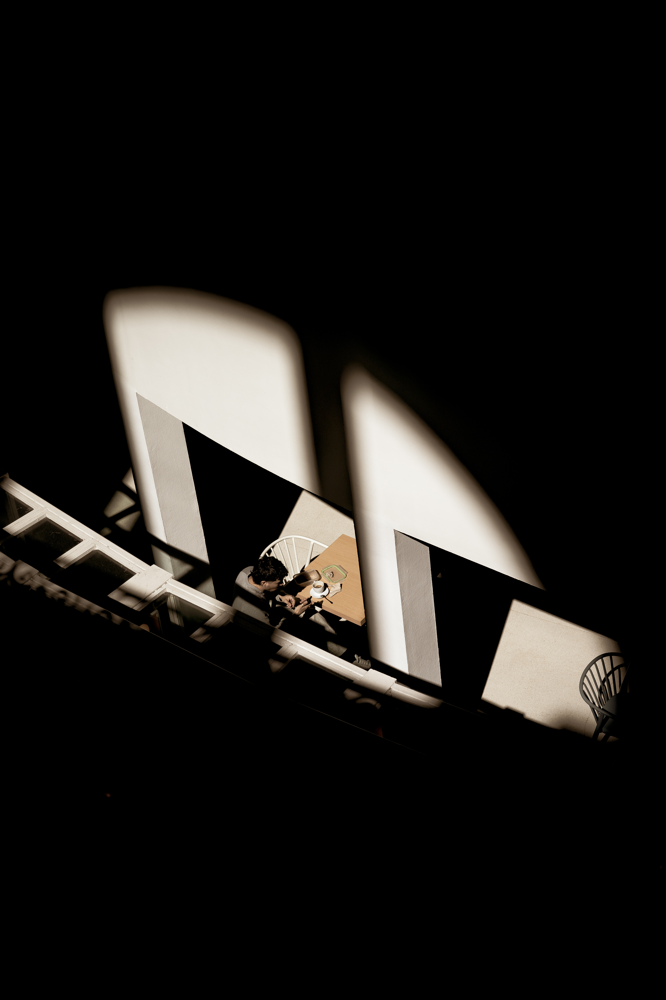

Photography serves as both my hobby and my passion, offering a means to express creativity while documenting the diverse moments encountered in everyday life
Over the past few years, I've explored various genres, from bustling city streets to serene natural landscapes.
Each photo I take is a story frozen in time, capturing emotions and memories. Whether it's the vibrant colors of a sunset or the subtle details in a close-up shot, I aim to convey a message and evoke emotions through my work.
 
